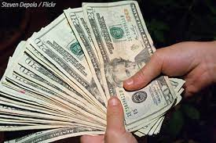
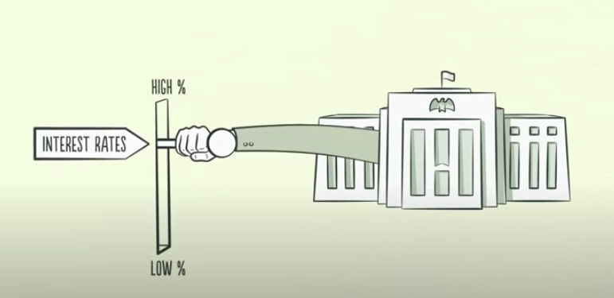

So what is a bond? A bond is basically a way for a government, organisation, company, bank, etc. to get a loan for any reason. This is how it works. When an institution or organisation wants to raise money they basically sell a bond. Let's assume in this case it's for $100. If you buy the bond you initially give the institution the $100 upfront.
Now that you've bought the bond every year, month, semi-year or any time period that you've agreed on, you're paid a certain amount of money. When the contract end and the time period is over then you get paid the interest rate one final time as well as your Principal back.
Now here's how to calculate the future payments of you bond, and how much your $100 will be worth after the contract is over. Let's start simple. Initially you only need 4 values. The initial Principal you've invested into the bond which we'll call P, the interest rate that the bond has as a decimal, that we'll call r, the number of years that you're investing your bond for which we'll call t, and finally how many times per year your money is compounded , which we'll call n
So to find the final value of your bond, A, the formula is ;
Now let's give them values for you to better understand. If the Principal is $100, the interest rate is 5%, the number of years is 10, and the bond is compounded twice a year then the value of the bond will be ;
A=100(1+0.05/2)^(10*2)
This comes up to be a value of about $163.86, meaning that after 10 years of investing $100 in a 5% bond which compounds twice a year you'll make 63.86% on your investment
But not everyone is willing to wait 10 years for a miniscule gain. Rather they bet on the bond. The bond's interest rate is influenced by the Fed, and the national interest rate. So if the government issues bonds when the interest rate is 5%, the bond's interest rate will also be at 5%. The thing is, interest rates change. And that's where the money is at. If I buy a bond at 5%, and the next day the interest rate goes up to 10% no one will buy my bond from me unless I give them a massive discount, since they can just buy the 10% bond from the government and get higher returns
But if I buy the same 5% interest bond today, and the next day the interest rates fall to 1% suddenly everyone will want to buy my bond, since they'll earn a higher interest rate on it, but they'll have to buy it for more. So taking this scenario, and assuming that the bond is for 10 years, it compounds once a year and instead of reinvesting my profits I take it out let's calculate the values. In the first scenario you will get all in all $50, assuming the princial is $100, whereas in the second scenario you will only make $10. So using simple rather than compounding interest you can sell your bond for $140 dollars with a 40% profit. Of course with compounding that will be even more, but there's some complicated math there
Thank you for reading this boring yet informative article on bond valuation. Please like and subscribe, and I'll see you next time